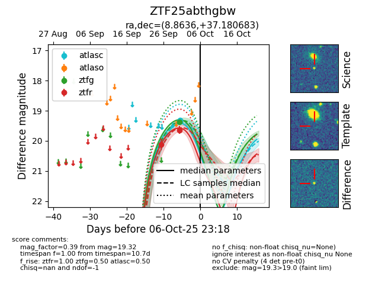
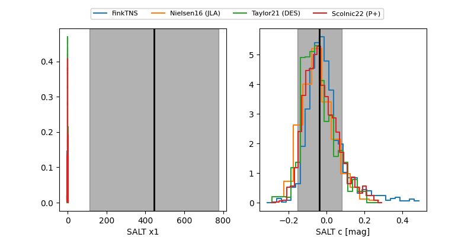

FINK: ZTF25abthgbw
Lasair: ZTF25abthgbw
ALeRCE: ZTF25abthgbw
ZTF25abthgbw (ztf,fink)
equatorial (ra, dec) = (8.8636,+37.18068)
galactic (l, b) = (119.4029,-25.58152)


last atlasc=19.32, ztfg=19.37, ztfr=19.64
1 atlasc, 1 ztfg, 2 ztfr detections